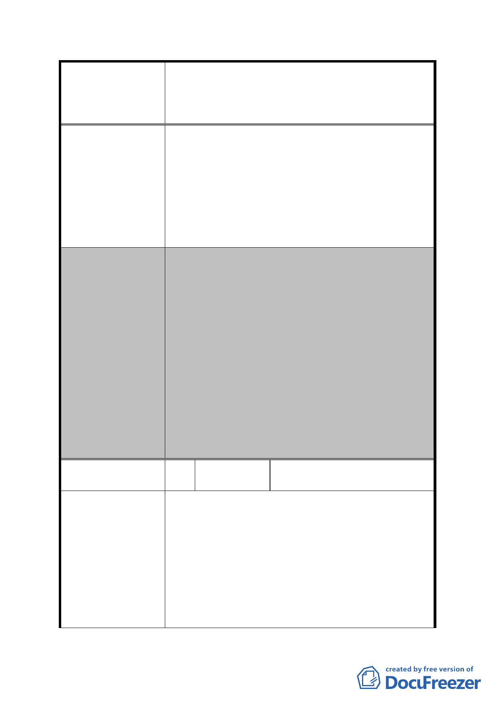

案名
委員會決議
編號
陳情理由
擬定臺北市內湖區蘆洲里附近工業區細部計畫暨變
更第 2 種工業區為科技工業區 B 區(特)、科技工業
區 B 區、道路用地、護坡用地及變更工業區(供輕工
業使用)為科技工業區 A 區(特)計畫案
勵參與市地重劃，在總量不變原則下，容積
率調整為 364%，故已就本案基地土地使用予
以放寬提昇。
二、 另陳情將本案基地剔除於重劃範圍外 1 節，
經初步檢視因涉及是否影響鄰地開發建築及
需繳納差額地價等問題，後續將配合開發總
隊研析結果及依專案小組決議再予研議妥適
方案。
一、 有關使用強度、使用項目、都市設計審議、
公共開放空間等依原公展有關內容通過。
二、 本案訂定開發時程獎勵，「重劃區範圍土地於
重劃完成之日起 2 年內開發者，給予 10%基準
容積獎勵。惟須於重劃完成之日起 3 年內取
得建造執照，否則本時程獎勵予以取消」及
劃定都市更新地區，以促進本地區早日開發。
三、 市地重劃範圍部分，依發展局本次大會所提
扣除範圍內「聰明社區」與「彩虹大樓」，以
及「為配合捷運民生汐止線路線及車站佈設
所指定留設公共開放空間，變更為道路用地
(供捷運設施使用)，並增加重劃範圍」之方
案予以通過，對於所附重劃負擔之計算資料
僅供參考。
6 陳情人
王議員正德協調方保泰君陳
情案
協調「為安康路２２８巷２５號排除於蘆洲里擬辦
都市計畫及市地重劃範圍外案，召開協調會。」決
議：
（一）陳情地點領有８６年合法ＲＣ永久性建物使
用執照，內設有電梯５台，先予敘明。
（二）依照說明會說明該地點地上物重劃補償約
５．８億（未含營業補助），依照土地開發總
隊初步計算有助重劃降低負擔。
（三）該計畫係工業區變更為科技工業區，土地使
- 31 -